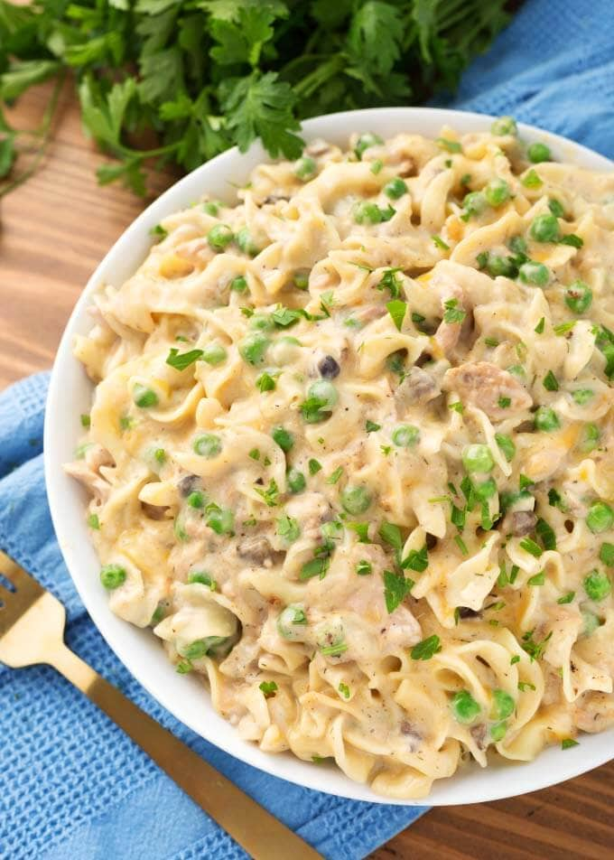

Instant Pot Tuna Casserole

Description
Tuna casserole is a comfort food for many people. With this simple recipe, you can make it with the convenience of an instant pot.
- 1 tablespoon olive oil
- 3 tablespoons unsalted butter
- 1 small sweet onion, diced
- 3 cups chicken broth, low sodium
- 1/2 teaspoon kosher salt
- 1/2 teaspoon pepper
- 1 teaspoon garlic powder
- 1/2 teaspoon onion powder
- 1/2 teaspoon dill weed, dried
- 2 (6 oz) cans chunk light tuna, in water, mostly drained
- 12 oz wide egg noodles, uncooked
- 2 (10.5 oz) cans condensed cream of mushroom soup (or 1 mushroom and 1 celery)
- 1 cup half and half
To finish:
- 2 cups frozen peas
- 2 cups sharp cheddar cheese, shredded
- 2 tablespoons fresh parsley, chopped
Instructions
- Turn on the sauté setting. When hot, add the oil, butter and onion. Cook, stirring occasionally, until onion starts to turn translucent.
- Add the broth, salt, pepper, garlic powder, onion powder, and dill. stir.
- Add the half and half. Turn off the sauté setting
- Add the egg noodles. Do not stir.
- Add the tuna, spreading evenly over the noodles. Do not stir.
- Add the mushroom soup and spread to cover the noodles. Do not stir.
- Close the lid and set the steam release knob to the sealing position.
- Press the Pressure Cook/Manual button or dial, then the +/- button or dial to select 3 minutes for soft noodles (2 minutes for firmer noodles). High Pressure. The pot will take several minutes to come to pressure.
- When the cook cycle has finished, turn the steam release knob to the Venting position to quick release the steam/pressure. If any soup starts to come out of the steam vent, close it and release the pressure in bursts until the pressure has gone down enough to open it fully.
- When the pin in the lid drops back down, open the lid.
- Carefully take the pot out of the pressure cooker housing and set on a heat safe surface (this keeps it from cooking more).
- Add the peas and give a gentle stir.
- Add the cheese and stir. The casserole will thicken as it cools.
- When the cheese has melted, serve with a sprinkle of parsley as a garnish.
Home